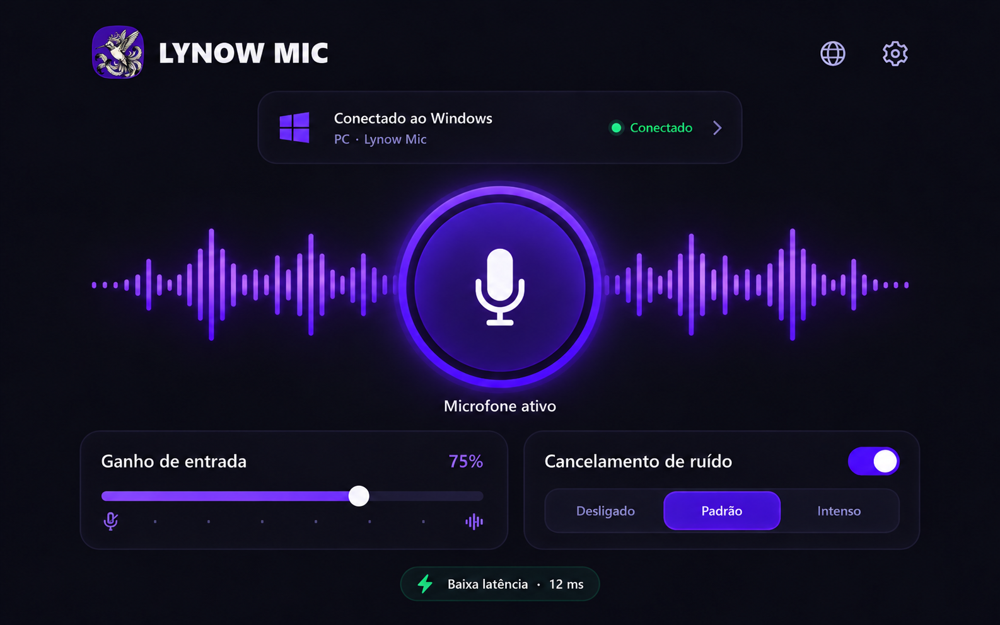
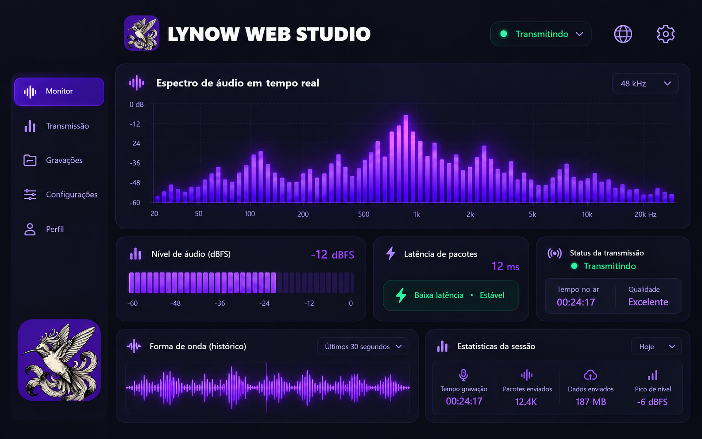

O Lynow Mic leva sua voz do Android para o Windows pela rede de casa. Você abre os dois aplicativos, escaneia um QR Code e escolhe onde quer usar o áudio — numa chamada, gravação ou partida.
Não tem cadastro, anúncio ou assinatura. A conversa acontece entre o celular e o computador na sua rede local, com uma conexão TLS validada pelo código de pareamento.
Prepare a conexão no Windows e leia o código com o celular. Ele já leva o endereço e as chaves necessárias, sem pedir que você digite IP ou porta.
O áudio segue em PCM mono, 48 kHz e 16 bits. É um formato direto, sem codec com perdas no caminho entre o telefone e o computador.
Os pacotes percorrem apenas a rede local. Na prática, isso evita a volta por um servidor externo e mantém a resposta adequada para chamadas, jogos e gravações.
Com o VB-CABLE, a voz recebida pode entrar no Discord, OBS, navegador ou jogo como uma fonte de áudio do Windows.
O medidor reage enquanto você fala e ajuda a perceber volume baixo ou saturação antes de começar uma chamada ou gravação.
O aplicativo não exige login e não envia métricas de uso. O código do Windows, do Android e do protocolo vai junto no pacote para quem quiser conferir.
O computador recebe e encaminha o áudio. O celular captura sua voz. As duas telas seguem a mesma identidade para você saber onde está e o que está acontecendo.
É onde você escolhe a rede, prepara o QR Code e acompanha o nível da voz que chega. Também define para qual saída do Windows o áudio será enviado.

Escaneia o código, pede acesso ao microfone e começa a transmitir. Há controle de ganho, mute e redução de ruído quando o aparelho oferece esse recurso.

Um estudo visual de como o monitoramento pode evoluir: espectro, nível e informações da sessão reunidos numa tela só. Esta imagem é uma prévia de interface, não um download separado nesta versão.
Na primeira vez há quatro passos. Depois, normalmente basta abrir os dois aplicativos e ler o código.
Conecte o smartphone à rede Wi-Fi da sua casa. O computador pode estar conectado no mesmo Wi-Fi ou via cabo de rede Ethernet no mesmo roteador.
Dica: Evite redes Wi-Fi públicas ou de convidados para permitir o tráfego P2P.
Para que o som do celular seja reconhecido como microfone no Discord, OBS e jogos, instale o driver oficial gratuito VB-CABLE e reinicie o Windows.
Abra Windows/LynowMic.exe. No campo Enviar áudio para, selecione
CABLE Input. Clique no botão Preparar conexão. O QR Code será gerado
imediatamente na tela.
Se o Firewall do Windows exibir um aviso, permita a conexão em redes privadas.
No aplicativo Android, toque em Escanear QR Code e aponte para a tela. Conceda permissão de câmera e microfone. O medidor de áudio reagirá à sua fala na mesma hora!
| Onde Configurar | O que Selecionar | Propósito |
|---|---|---|
| Lynow Mic no Windows | CABLE Input | Envia a voz do celular diretamente para a entrada do driver virtual. |
| Discord / OBS / Jogos | CABLE Output | Recebe a voz como se fosse um microfone físico USB plugado no PC. |
| Teste Rápido de Fone | Seus Fones de Ouvido | Permite ouvir sua própria voz para calibrar ganho e latência. |
No Windows, o programa é portátil. No Android, o APK é instalado manualmente. Nenhum dos dois pede uma conta.
São as verificações que costumam resolver os problemas mais comuns de rede e roteamento de áudio.
Verifique se o celular e o computador estão exatamente na mesma rede Wi-Fi. Certifique-se de que o Firewall do Windows permitiu o LynowMic em redes privadas. Desative temporariamente conexões VPN.
No Lynow Mic do Windows, a saída deve estar configurada como CABLE Input. No Discord (Configurações → Voz e Vídeo), o Dispositivo de Entrada deve ser selecionado como CABLE Output.
Sempre utilize fones de ouvido no computador. Nunca reproduza o som do microfone em caixas de som no mesmo ambiente do celular para evitar feedback acústico.
No Android, vá em Configurações → Aplicativos → Lynow Mic → Bateria, e selecione a opção "Sem Restrições" para garantir que o sistema não encerre o processo em segundo plano.